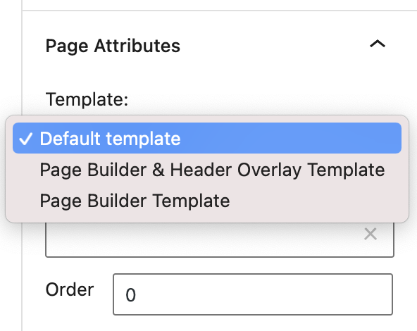
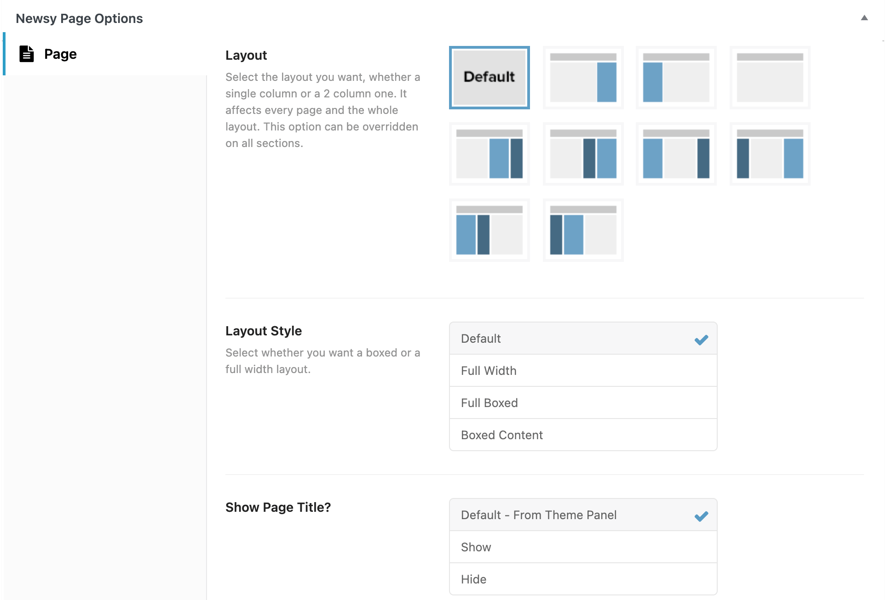

With Newsy, you are provided by three kinds of page template which are Default Template, Page Builder Template and Page Builder & Header Overlay Template Page.

There are few things that we’ll explain to you on this section :
- Default Page Template
- Page Builder Template
- Page Builder & Header Overlay Template (Transparent Header)
Default Page Template
Default Template is the original page template that is assigned when you create a new page. This template is a standard page template that comes from WordPress.
We also provide several options so that you can configure and customize your page. You can find the option list on the Newsy Page Options metabox at the bottom page area.

Please check the following explanation about Newsy Page Options below :
-
Layout
Choose layout for the current page. -
Primary Sidebar
Choose page primary sidebar for the current page. Please note, this option will appear and work if you choose Right Sidebar or Left Sidebar on Layout option above. -
Secondary Sidebar
Choose page secondary sidebar for the current page. Please note, this option will appear and work if you choose Secondary Right Sidebar or Secondary Left Sidebar on Layout option above. -
Layout Style
Select whether you want a boxed or a full width layout. Default option shows what default style selected in theme options. -
Show Page Title?
You may disable showing title of page. -
Show Breadcrumb?
You may disable showing breadcrumb of page. -
Main Navigation Menu
Choose custom main navigation menu for the current page.
Page Builder Template
Page Builder Template is specific page template for landing page or homepage purpose. With this template you can create your landing page layout with WPBakery Page Builder / Elementor Page Builder backend editor or frontend editor.
You also can use Newsy Elements with your preferred page builder.
- For more detail about WPBakery Page Builder usage, you can follow this link.
- For more detail about Elementor Page Builder usage, you can follow this link.
Page Builder & Header Overlay Template
Same as Page Builder Template but Header Layout will overlap the content. Useful if you need transparent header Layout. See our demo using Header Overlay page template in here.